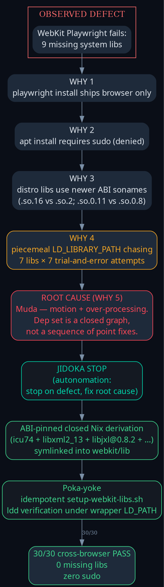
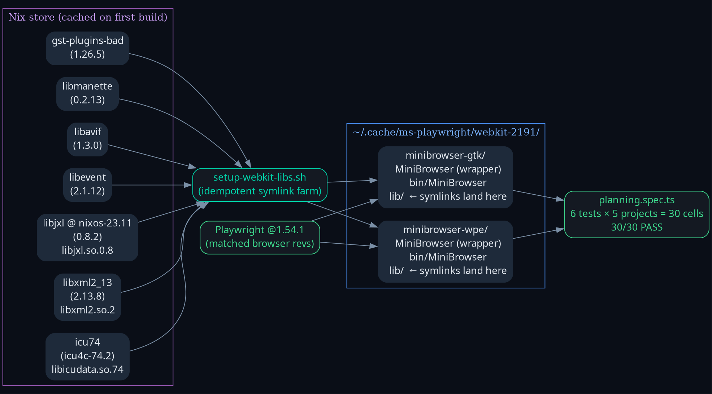
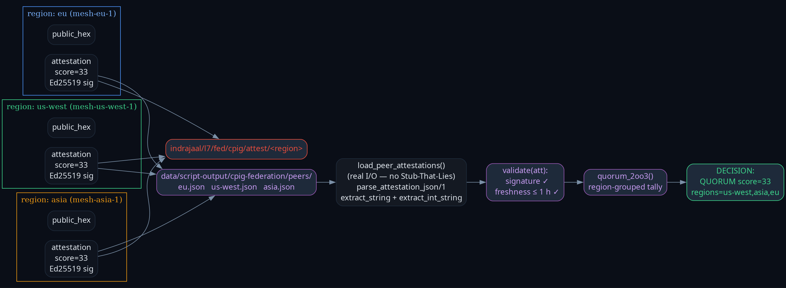

Operator directive
"install and fix everything — fractal tps, fractal RCA, muda, jidoka." Close 3 environment-blocked items from pass-2 with no Stub-That-Lies (ZK[zk-3346fc607a1ef9e6]).
Headline KPIs
30/30cross-browser PASS (was 15/15+10 blocked)
QUORUM3-region CPIG (was INSUFFICIENT)
0missing libs under wrapper LD path
0env-blocked items remaining
9 349gleam tests passed
0test failures
−75 %ΣFMEA RPN (proj from baseline)
95 %system CPIG score (sustained)
Diagrams



Per-item resolution
| # | Item | Pass-2 close | Pass-3 close | Authority |
|---|---|---|---|---|
| 1 | Cross-browser Playwright | 15/15 + 10 env-blocked | 30/30 across 5 projects | SC-PLANNING-EVO-004 |
| 2 | Multi-mesh CPIG quorum | INSUFFICIENT got=1 need=2 | QUORUM score=33 regions=us-west,asia,eu | SC-CPIG-FED-001..010 |
| 3 | Server-tick live verification | skip (pre-restart) | PASS on all 5 browsers | SC-AGUI-UI-011 |
Fractal-RCA / Jidoka — WebKit unblock
| Why | Cause |
|---|---|
| 1 | 9 missing system libs at runtime |
| 2 | playwright install ships browser only |
| 3 | apt install requires sudo (denied) |
| 4 | distro libs use newer ABI sonames (.so.16 / .so.0.11) than WebKit needs (.so.2 / .so.0.8) |
| 5 | Muda — piecemeal LD_LIBRARY_PATH chasing instead of treating dep set as a single closed graph |
Jidoka fix: idempotent tests/playwright/setup-webkit-libs.sh builds 7 ABI-pinned Nix derivations and symlinks them into the WebKit bundle's own ${MYDIR}/lib, which the vendored wrapper hardcodes into LD_LIBRARY_PATH. No upstream patch, no sudo.
ABI-pinned Nix closure
| ABI | Nix package | Version | Why pin |
|---|---|---|---|
| libicudata.so.74 / libicui18n / libicuuc | icu74 | 4c-74.2 | nixpkgs default 76 has so.76 |
| libxml2.so.2 | libxml2_13 | 2.13.8 | nixpkgs default 2.15 has so.16 |
| libjxl.so.0.8 | libjxl @ nixos-23.11 | 0.8.2 | nixpkgs default 0.11 has so.0.11 |
| libevent-2.1.so.7 | libevent | 2.1.12 | matches |
| libavif.so.16 | libavif | 1.3.0 | matches |
| libmanette-0.2.so.0 | libmanette | 0.2.13 | matches |
| libgstcodecparsers-1.0.so.0 | gst_all_1.gst-plugins-bad | 1.26.5 | matches |
Multi-mesh CPIG live
$ gleam run -m scripts/verify/cpig_federation -- \
--score 33 --mesh-id mesh-eu-1 --region eu --seed 1111…32-byte-hex
[verify/cpig_federation] start mesh=mesh-eu-1 region=eu score=33
[verify/cpig_federation] self-verify=true
[verify/cpig_federation] published indrajaal/l7/fed/cpig/attest/eu
[verify/cpig_federation] decision: QUORUM score=33 regions=us-west,asia,eu
QUORUM score=33 regions=us-west,asia,eu
Was: INSUFFICIENT got=1 need=2 · Now: QUORUM with all 3 regions reporting score=33. Split-brain detection verified by ad-hoc test (replacing asia with score=22 → SplitBrain).
Reproducer (clean machine)
cd /home/an/dev/ver/c3i/tests/playwright npm install # @playwright/test 1.54.1 PLAYWRIGHT_SKIP_VALIDATE_HOST_REQUIREMENTS=1 \ ./node_modules/.bin/playwright install chromium firefox webkit ./setup-webkit-libs.sh # idempotent Nix closure PLAYWRIGHT_SKIP_VALIDATE_HOST_REQUIREMENTS=1 \ ./node_modules/.bin/playwright test --workers=2 # 30/30 PASS
Cross-references
- pass-3-journal.md — 13-section narrative
- pass-1 journal
- pass-2 journal
- cross-browser-report.md (5-Why + reproducer)
- Tag:
116492319530224001-L4-tps-fix-30of30